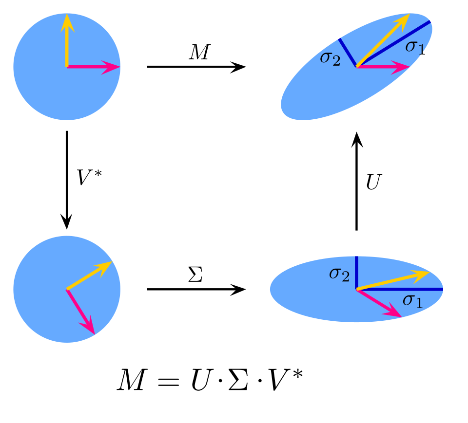
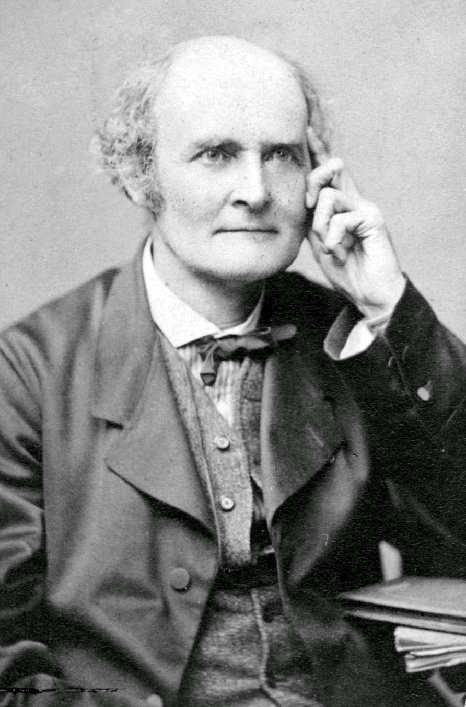

A = U Σ V* A = Q Λ Qᵀ PA = LU A = S J S⁻¹
These four factorizations, the singular value decomposition, the spectral decomposition, the LU factorization and the Jordan normal form, summarize most of what is known about a single matrix. Each one rewrites an arbitrary array of numbers as a product of matrices that are simple in some precise sense: orthogonal, diagonal, triangular or nearly diagonal. This course is about where those factorizations come from, why they exist, what they reveal, and what happens when they are computed in floating-point arithmetic.
The elementary course treated a matrix as a rectangular table and taught the mechanics of addition, scalar multiplication and the row-by-column product. Here a matrix is primarily the coordinate expression of a linear map between finite-dimensional vector spaces. That shift of viewpoint explains at once why the product is defined as it is, why it is associative but not commutative, and why quantities such as the rank, the determinant, the trace and the eigenvalues are worth computing: they are exactly the quantities that do not depend on the choice of coordinates.
The subject has a long history. Elimination on rectangular arrays appears in the Chinese Nine Chapters on the Mathematical Art (compiled by the first century CE). Determinants were introduced independently by Seki Takakazu (1683) and Leibniz (1693), and Cramer published his rule in 1750. Sylvester coined the word matrix in 1850, and Cayley's 1858 memoir made matrices algebraic objects in their own right. The twentieth century added the spectral theory of Hilbert, Schur and von Neumann, and, with the arrival of electronic computers, the numerical linear algebra of Turing, Wilkinson, Householder and Golub, which is now the computational core of scientific computing, statistics and machine learning.
Notation. Throughout, 𝔽 denotes ℝ or ℂ unless a general field is explicitly allowed. 𝔽m×n is the space of m × n matrices, aij is the entry in row i and column j, Aᵀ is the transpose, and A* = Āᵀ is the conjugate transpose (for real matrices A* = Aᵀ). Vectors are columns. Inside a paragraph a matrix is written row by row with semicolons separating rows, so [ 1 2 ; 3 4 ] has first row (1, 2) and second row (3, 4). The identity is I, the standard basis vectors are e₁, …, eₙ, and diag(d₁, …, dₙ) is the diagonal matrix with the given diagonal. Proofs end with the symbol ∎.
In this course, you will:
- 1.Treat matrices as linear maps, prove the rank–nullity theorem and understand change of basis and similarity
- 2.Prove that row rank equals column rank, that reduced row echelon form is unique, and when LU factorization exists
- 3.Characterize the determinant axiomatically, derive the Leibniz formula, and prove det(AB) = det A · det B
- 4.Use the adjugate, Cramer's rule, Schur complements and the Sherman–Morrison–Woodbury identity
- 5.Study eigenvalues through the characteristic and minimal polynomials and prove the Cayley–Hamilton theorem
- 6.Decide diagonalizability and construct the Jordan normal form, including the rank formula for block sizes
- 7.Build orthonormal bases by Gram–Schmidt, factor A = QR, and solve least-squares problems
- 8.Prove the spectral theorem, Schur's triangularization theorem and the Courant–Fischer min-max principle
- 9.Characterize positive definite matrices five different ways and prove Sylvester's criterion and law of inertia
- 10.Prove the existence of the singular value decomposition and the Eckart–Young low-rank approximation theorem
- 11.Analyze Markov chains through the Perron–Frobenius theory of nonnegative matrices
- 12.Measure sensitivity with norms and condition numbers and understand backward stability of algorithms
- 13.Solve 60 practice problems, from computations to research-style proofs
How to use this course: the lessons are cumulative, and each one states its key idea at the top. Work every exercise before opening its solution, and attempt each practice problem with pencil and paper. Several practice problems prove results that are quoted without proof in the lessons.
Figures


Contents
Matrices as Linear Maps Lesson 2
Row Reduction, Rank and LU Factorization Lesson 3
Determinants Lesson 4
Inverses, Cramer's Rule and Block Matrices Lesson 5
Eigenvalues and the Cayley–Hamilton Theorem Lesson 6
Diagonalization and the Jordan Normal Form Lesson 7
Inner Products, Gram–Schmidt and QR Lesson 8
The Spectral Theorem Lesson 9
Positive Definite Matrices and Quadratic Forms Lesson 10
The Singular Value Decomposition Lesson 11
Nonnegative Matrices, Markov Chains and Perron–Frobenius Lesson 12
Norms, Conditioning and Numerical Stability Problem Set
60 problems Assessment
Randomly generated questions
Image sources
- Figure 1 · Singular-Value-Decomposition. By Georg-Johann. CC BY-SA 3.0. From Wikimedia Commons: https://commons.wikimedia.org/wiki/File:Singular-Value-Decomposition.svg
- Figure 2 · Arthur Cayley. By Herbert Rose Barraud. Public domain. From Wikimedia Commons: https://commons.wikimedia.org/wiki/File:Arthur_Cayley.jpg